R.utils::sourceDirectory(here::here("src", "functions"))Color scales and palettes
Under construction.
This page is a work in progress and may contain areas that need more detail or that required syntactical, grammatical, and typographical changes. If you find some part requiring some editing, please let me know so I can fix it for you.
Overview
External Functions
Provided:
view_html(): for viewing data frames in html format, from /src/functions/view_html.R
Libraries
- {colorblindr} 0.1.0: for simulations of color vision deficiencies to ggplot2 objects; post-hoc color editing
- {colorspace} 2.1.0: for manipulating and assessing colors and color palettes
- {cowplot} 1.1.3: for ggplot add-ons; object management
- {here}: 1.0.1: for path management
- {dplyr} 1.1.4: for selecting, filtering, and mutating
- {ggplot2} 3.5.1: for plotting
- {ggthemes} 5.1.0: for palettes and themes
- {patchwork} 1.2.0: for plotting on grids
- {RColorBrewer} 1.1.3: for color palettes
Load libraries
The libraries below should be installed as part of the setup proecess at the beginning of the semester.
library(dplyr)
library(ggplot2)
library(colorspace)
library(cowplot)
library(ggthemes) # for ggthemes::scale_color_colorblind()
library(colorblindr)
library(khroma)Loading Data
To examine some associations, we will use some swimming event times which can be accessed from:
https://raw.githubusercontent.com/slicesofdata/dataviz24/main/data/processed/cleaned-2023-cms-invite.csvTo access the data, either read the file directly from the url using read.csv() and assign the data frame a name like SWIM:
read.csv("https://raw.githubusercontent.com/slicesofdata/dataviz24/main/data/processed/cleaned-2023-cms-invite.csv")
Or download it and save to the /data/processed directory and read from there.
SWIM <- read.csv(here::here("data", "processed", "cleaned-2023-cms-invite.csv"))Color Uses in Data Visualization
To distinguish categories (qualitative)
SWIM |>
ggplot(mapping = aes(x = School, fill = Event)) +
geom_bar()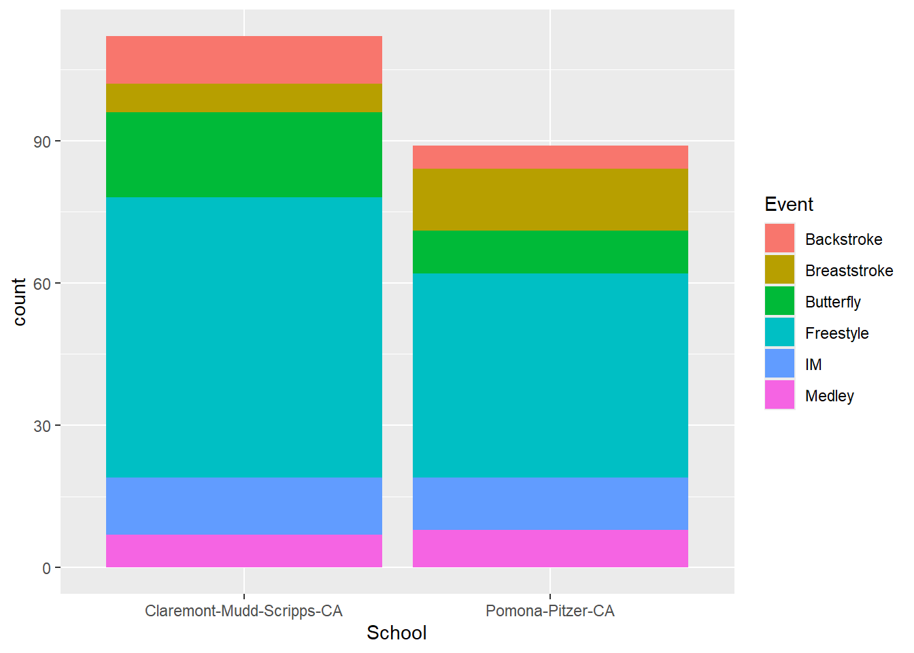
To represent numeric values (sequential)
SWIM |>
filter(Distance < 1000) |>
ggplot(mapping = aes(x = Event, y = Time, color = Time)) +
geom_point(position = position_jitter()) +
theme_classic()When no fill scale is defined, default is scale_fill_gradient(), which we can change to something else.
SWIM |>
filter(Distance < 1000) |>
ggplot(mapping = aes(x = Event, y = Time, color = Time)) +
geom_point(position = position_jitter()) +
theme_classic() +
scale_fill_viridis_c()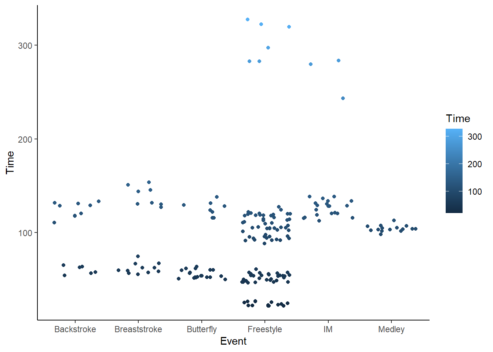
But the function won’t change anything if we don’t use the proper scale_*_() function.
SWIM |>
filter(Distance < 1000) |>
ggplot(mapping = aes(x = Event, y = Time, color = Time)) +
geom_point(position = position_jitter()) + theme_classic() +
scale_color_viridis_c()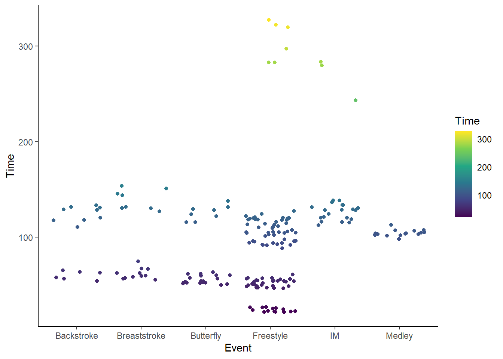
Or:
SWIM |>
filter(Distance < 1000) |>
ggplot(mapping = aes(x = Event, y = Time, color = Time)) +
geom_point(position = position_jitter()) +
theme_classic() +
scale_color_viridis_c(option = "B", begin = 0.15)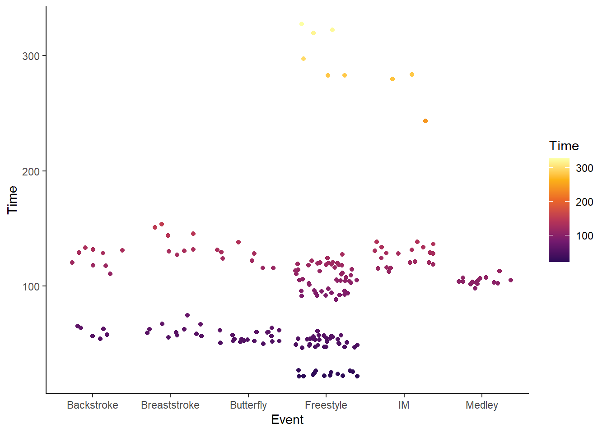
To represent numeric values (diverging):
SWIM |>
filter(Distance < 1000, Time < 200) |>
filter(Event == "Freestyle") |>
mutate(Diff = (Time - mean(Time, na.rm = T))) |>
ggplot(mapping = aes(x = Event, y = Time, col = Diff)) +
geom_point(position = position_jitter()) +
theme_classic() +
scale_color_gradient2()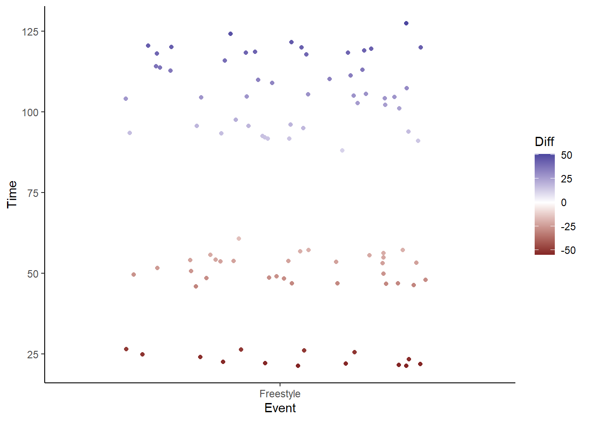
Or:
SWIM |>
filter(Distance < 1000, Time < 200) |>
filter(Event == "Freestyle") |>
mutate(Diff = (Time - mean(Time, na.rm = T))) |>
ggplot(mapping = aes(x = Event, y = Time, col = Diff)) +
geom_point(position = position_jitter()) +
theme_classic() +
scale_color_continuous_diverging() 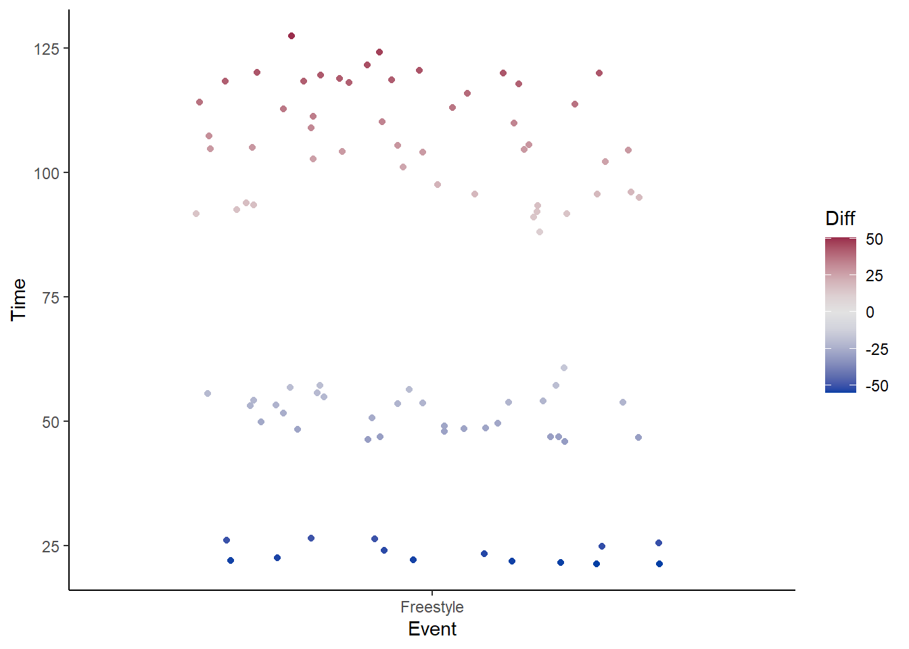
Or:
SWIM |>
filter(Distance < 1000, Time < 200) |>
filter(Event == "Freestyle") |>
mutate(Diff = (Time - mean(Time, na.rm = T))) |>
ggplot(mapping = aes(x = Event, y = Time, col = Diff)) +
geom_point(position = position_jitter()) +
theme_classic() +
scale_color_distiller(type = "div")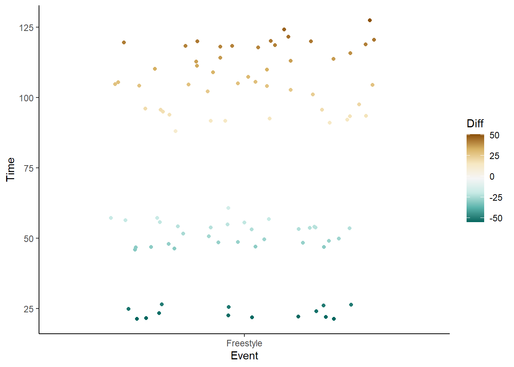
There are other applications too but we cannot get into them all here.
What is a Color Palette?
First, just in base R, there are 657 colors, which you can check out using colors() and demo("colors").
Well, let’s see:
?palette
palette()We see palette() returns a character vector of 8 color elements. If you wanted a better view, plot the palette to see the colors by using geom_tile().
ggplot(data = data.frame(x = 1:8,
y = rep(1, 8),
names = sort(palette())),
mapping = aes(names, y)
) +
geom_tile(fill = palette(),
size = 6
) +
coord_flip() +
theme_classic() +
xlab("") + ylab("") +
theme(axis.text.x = element_blank())Warning: Using `size` aesthetic for lines was deprecated in ggplot2 3.4.0.
ℹ Please use `linewidth` instead.You can also use different palettes and/or create a function for creating them.
palette.colors(n = 5,
palette = "Okabe-Ito",
alpha = .5,
recycle = FALSE
)[1] "#00000080" "#E69F0080" "#56B4E980" "#009E7380" "#F0E44280"If you want to use the "Okabe-Ito" palette but use a function that will generate the number of palette colors needed. Here is an example of creating a function named get_palette().
get_palette <- function(n = 5,
palette = "Okabe-Ito",
alpha = 1,
plot = TRUE,
tile_size = 5) {
pal = palette.colors(n = n,
palette = palette,
alpha = alpha,
recycle = FALSE
)
if (plot == TRUE) {
(p = ggplot(data = data.frame(x = 1:n,
y = rep(1, n),
names = pal),
mapping = aes(x = names, y = y)
) +
geom_tile(mapping = aes(fill = pal, size = tile_size),
alpha = alpha, show.legend = FALSE
) +
coord_flip() +
theme_classic() +
xlab("") +
ylab("") +
theme(axis.text.x = element_blank())
)
}
# print(pal);
return(pal)
}get_palette(n = 5, palette = "Okabe-Ito", alpha = .4, plot = TRUE)[1] "#00000066" "#E69F0066" "#56B4E966" "#009E7366" "#F0E44266"The colors will change if you change the alpha.
get_palette(n = 8, palette = "Okabe-Ito", alpha = .5, plot = TRUE)[1] "#00000080" "#E69F0080" "#56B4E980" "#009E7380" "#F0E44280" "#0072B280"
[7] "#D55E0080" "#CC79A780"get_palette(n = 8, palette = "Okabe-Ito", alpha = .2, plot = TRUE)[1] "#00000033" "#E69F0033" "#56B4E933" "#009E7333" "#F0E44233" "#0072B233"
[7] "#D55E0033" "#CC79A733"Color Scales Built into {ggplot2}
There are colors built into {ggplot2}. The scale_*() functions will follow the naming conventions scale_color_*() or scale_fill_*(). When you have bars or open circles, you are changing the fill color and with solid circle points you are changing color or col. This is somewhat confusing but your go-to functions should adhere to the naming conventions (e.g., scale_fill_*() and scale_color_*()). Some examples include: scale_color_brewer() or scale_color_distiller() for discrete or continuous scales, respectively.
{ggplot} functions for colors:
scale_color_hue(): color, data: discrete, palette: qualitativescale_fill_hue(): fill, data: discrete, palette: qualitativescale_color_gradient(): color, data: continuous, palette: sequentialscale_color_gradient2(): color, data: continuous, palette: divergingscale_fill_viridis_c(): color, data: continuous, palette: sequentialscale_fill_viridis_d(): fill, data: discrete, palette: sequentialscale_color_brewer(): color, data: discrete , palette: qualitative, diverging, sequentialscale_fill_brewer(): fill, data: discrete, palette: qualitative, diverging, sequentialscale_color_distiller(): color, data: continuous, palette: qualitative, diverging, sequential
The {colorspace} Library**
The {colorspace} library written by Claus Wilke, Reto Stauffer, and Achim Zeileis brings some really useful color functionality to {ggplot2} and creates some order to an otherwise messing set of functions.
Four components of the naming convention: scale_<aesthetic>_<datatype>_<colorscale/palette-type>()
scale_*()>: the base scale function, plus<aesthetic>: name of the aesthetic (fill, color, colour)<datatype>: type of variable plotted (discrete, continuous, binned)<colorscale>: type of the color scale (qualitative, sequential, diverging, divergingx)
Examples:
scale_color_discrete_qualitative()color, discrete, qualitativescale_fill_continuous_sequential()fill, continuous, sequentialscale_colour_continous_divergingx()color, continuous, diverging
{colorspace} Color Palettes
colorspace::hcl_palettes(type = "sequential", plot = TRUE) # all sequential palettes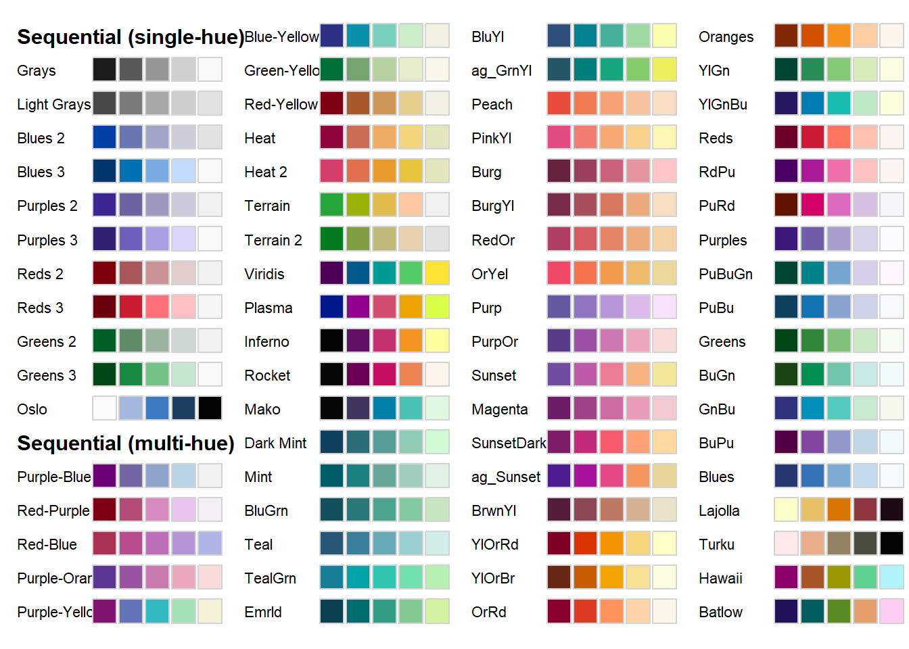
colorspace::hcl_palettes(type = "diverging", plot = TRUE, n = 9) # all diverging palettes
colorspace::divergingx_palettes(plot = TRUE, n = 9) # all divergingx palettes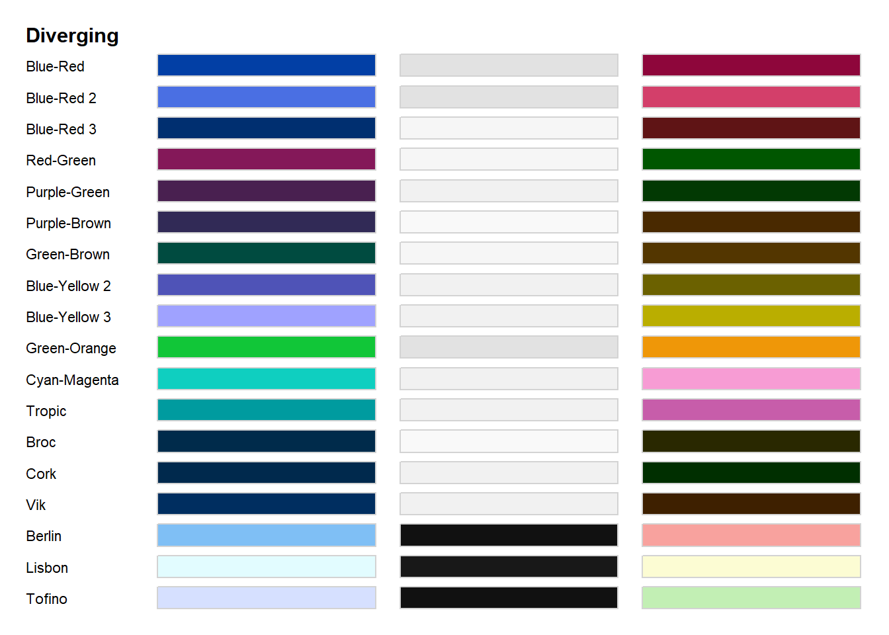
Example plots
We can then specify the function according to our goal using: scale_<aesthetic>_<datatype>_<colorscale>(). We can see an example with filling points.
Continuous:
SWIM |>
filter(Distance < 1000, Time < 200) |>
filter(Event == "Freestyle") |>
mutate(Diff = (Time - mean(Time, na.rm = TRUE))) |>
ggplot(mapping = aes(x = Event, y = Time, color = Diff)) +
geom_point(position = position_jitter()) +
theme_classic() +
scale_color_continuous()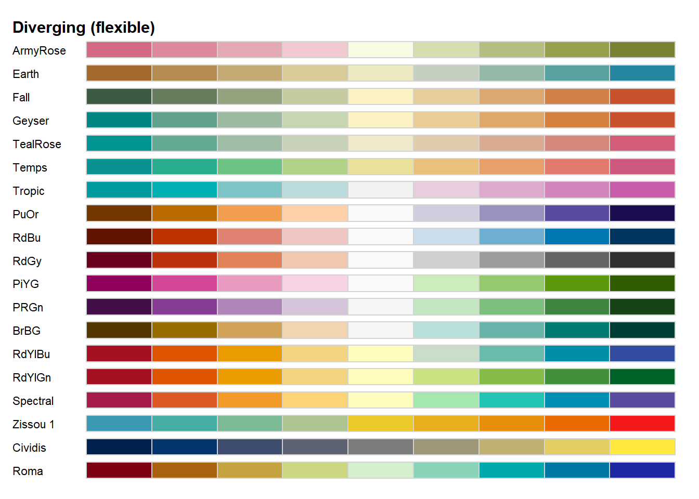
Continuous and Sequential:
SWIM |>
filter(Distance < 1000, Time < 200) |>
filter(Event == "Freestyle") |>
ggplot(mapping = aes(x = Event, y = Time, color = Time)) +
geom_point(position = position_jitter()) + theme_classic() +
scale_color_continuous_sequential()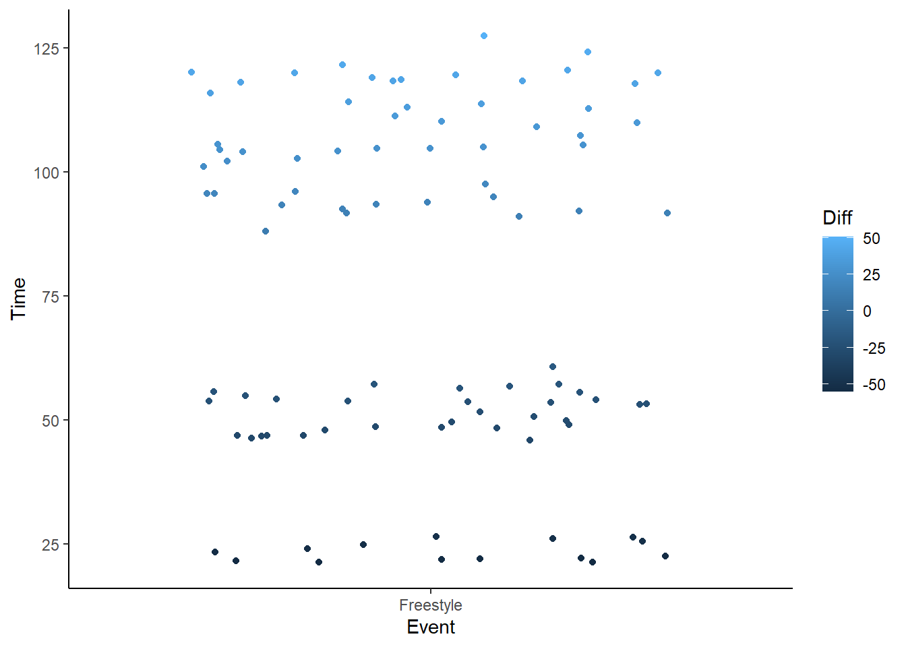
Discrete and Sequential:
SWIM |>
filter(Distance < 1000, Time < 200) %>%
filter(., Event == "Freestyle") %>%
mutate(., Diff = (Time - mean(Time, na.rm = T))) %>%
ggplot(., aes(x = Event, y = Time, color = School)) +
geom_point(position = position_jitter()) + theme_classic() +
scale_color_discrete_sequential()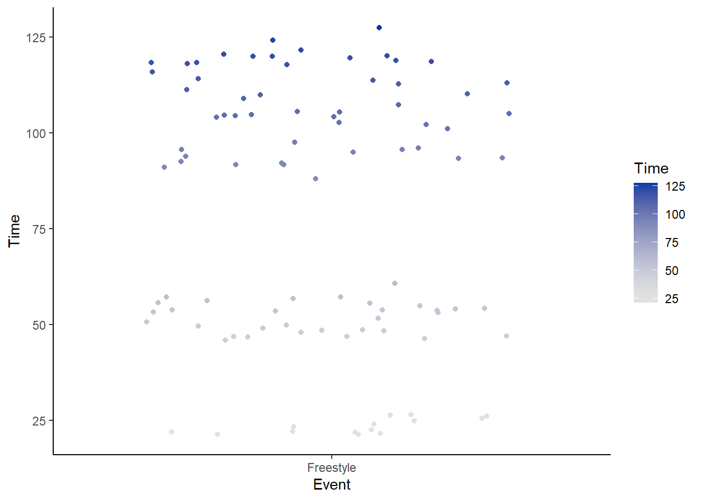
A specific palette added: palette = "Inferno"
SWIM %>%
filter(., Distance < 1000, Time < 200) %>%
filter(., Event == "Freestyle") %>%
# mutate(., Diff = (Time - mean(Time, na.rm = T))) %>%
ggplot(., aes(x = Event, y = Time, col = Time)) +
geom_point(position = position_jitter()) + theme_classic() +
scale_color_continuous_sequential(palette = "Inferno")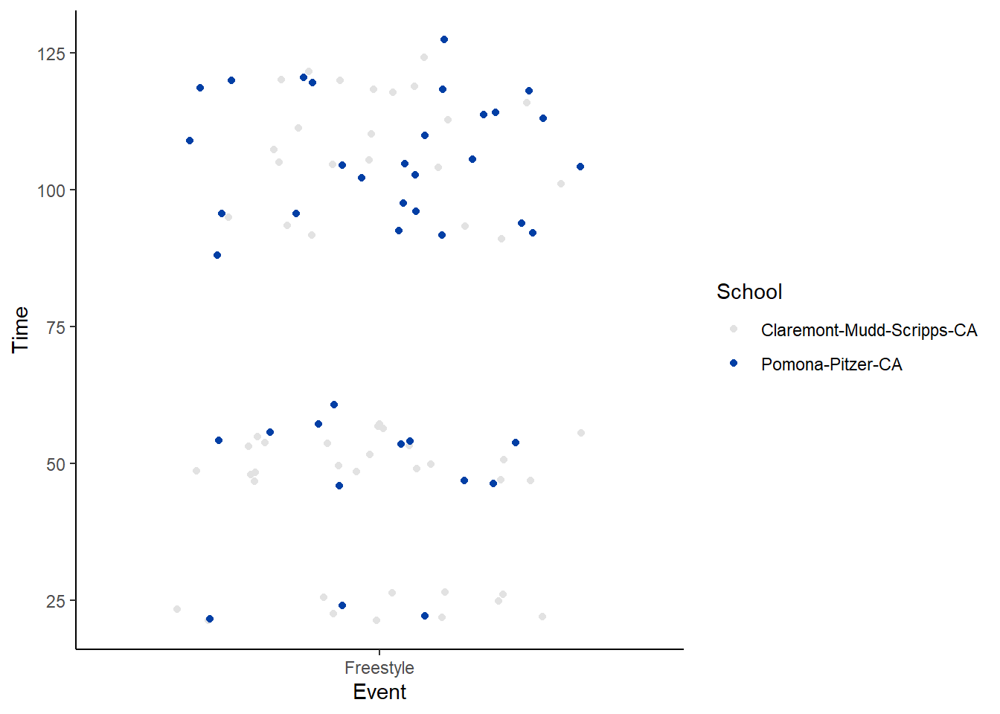
Continuous and Diverging:
SWIM %>%
filter(., Distance < 1000, Time < 200) %>%
filter(., Event == "Freestyle") %>%
mutate(., Diff = (Time - mean(Time, na.rm = T))) %>%
ggplot(., aes(x = Event, y = Time, col = Diff)) +
geom_point(position = position_jitter()) + theme_classic() +
scale_color_continuous_diverging()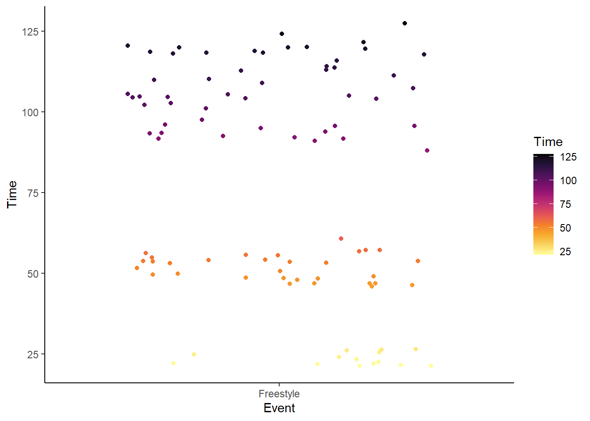
Exploring {colorspace}
For a dynamic exploration use colorspace::hcl_wizard(), which is a {shiny} app . When you are done exploring, click the “Return to R” box.
Color Picker
{colorspace} also has a color picker function, colorspace::hclcolorpicker() which will allow you to pick color and obtain the hexidecimal color codes. You can also obtain html color names and rgb codes for colors at websites like htmlcolorcodes.com. With recent updates to RStudio, color names written as character strings when typed in the console or in files will display the color. Hint: you must type the names in lowercase (e.g., “mediumseagreen. If the color is not known by its name, then you won’t see the background string color change.
Setting Colors Manually
Discrete, qualitative scales
Discrete, qualitative scales are sometimes best set manually.
An example using default color palette:
SWIM %>%
filter(., Distance < 1000) %>%
ggplot(., aes(x = Distance, y = Time, color = School)) +
geom_point(position = position_jitter()) +
scale_color_hue()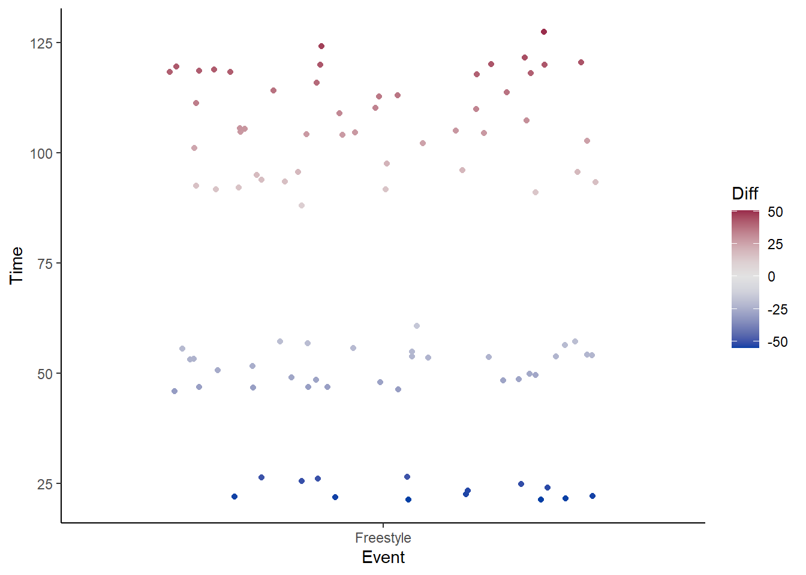
Now consider the following plot.
SWIM %>%
ggplot(., aes(x = School, y = Time, fill = Event)) +
geom_col() To set the color, add a layer:
For the hue, scale_<datatype>_hue() could be scale_colour_hue() or scale_fill_hue(). The two function are listed below.
scale_colour_hue(
...,
h = c(0, 360) + 15,
c = 100,
l = 65,
h.start = 0,
direction = 1,
na.value = "grey50",
aesthetics = "colour"
)
scale_fill_hue(
...,
h = c(0, 360) + 15,
c = 100,
l = 65,
h.start = 0,
direction = 1,
na.value = "grey50",
aesthetics = "fill"
)When you are trying to customize a plot for a client or find issue with the color palettes out-of-the-box, scale_color_manual() or scale_fill_manual() are likely your best friends. As you see in the functions, you need to pass some color values. This is a vector of color by name or hexidecimal code.
scale_colour_manual(
...,
values,
aesthetics = "colour",
breaks = waiver(),
na.value = "grey50"
)
scale_fill_manual(
...,
values,
aesthetics = "fill",
breaks = waiver(),
na.value = "grey50"
)But you need to know how values are mapped to subgroups. How many subgroups are there and what are they?
glimpse(SWIM) Rows: 201
Columns: 10
$ Year <int> 2023, 2023, 2023, 2023, 2023, 2023, 2023, 2023, 2023, 2023, 2…
$ School <chr> "Pomona-Pitzer-CA", "Claremont-Mudd-Scripps-CA", "Claremont-M…
$ Team <chr> "Mixed", "Mixed", "Mixed", "Mixed", "Mixed", "Mixed", "Mixed"…
$ Relay <chr> "Relay", "Relay", "Relay", "Relay", "Relay", "Relay", "Relay"…
$ Distance <int> 200, 200, 200, 200, 200, 200, 200, 200, 200, 200, 200, 200, 2…
$ Name <chr> NA, NA, NA, NA, NA, NA, NA, NA, NA, NA, NA, NA, NA, NA, NA, "…
$ Age <int> NA, NA, NA, NA, NA, NA, NA, NA, NA, NA, NA, NA, NA, NA, NA, 2…
$ Event <chr> "Medley", "Medley", "Medley", "Medley", "Medley", "Medley", "…
$ Time <dbl> 97.74, 101.34, 101.64, 102.21, 102.83, 102.93, 103.55, 103.63…
$ Split50 <dbl> 26.35, 24.40, 24.06, 24.99, 24.37, 27.46, 28.54, 26.75, 25.77…unique(SWIM$Event)[1] "Medley" "Freestyle" "IM" "Butterfly" "Breaststroke"
[6] "Backstroke" Make note of the order.
The order of the colors in the vector passes to values will map to the order of the levels in the data frame. We can demonstrate this by changing the data frame arrangement.
Sorting by ascending or descending order changes the data frame.
SWIM %>% select(., Event) %>% unique() Event
1 Medley
16 Freestyle
22 IM
59 Butterfly
112 Breaststroke
123 BackstrokeSWIM %>% arrange(., desc(Event)) %>% select(., Event) %>% unique() Event
1 Medley
16 IM
39 Freestyle
141 Butterfly
168 Breaststroke
187 BackstrokeSo how you sort the data frame matters, right? No.
Is this vector a factor? Note, you can also see this using glimpse().
is.factor(SWIM$Event)[1] FALSEglimpse(SWIM)Rows: 201
Columns: 10
$ Year <int> 2023, 2023, 2023, 2023, 2023, 2023, 2023, 2023, 2023, 2023, 2…
$ School <chr> "Pomona-Pitzer-CA", "Claremont-Mudd-Scripps-CA", "Claremont-M…
$ Team <chr> "Mixed", "Mixed", "Mixed", "Mixed", "Mixed", "Mixed", "Mixed"…
$ Relay <chr> "Relay", "Relay", "Relay", "Relay", "Relay", "Relay", "Relay"…
$ Distance <int> 200, 200, 200, 200, 200, 200, 200, 200, 200, 200, 200, 200, 2…
$ Name <chr> NA, NA, NA, NA, NA, NA, NA, NA, NA, NA, NA, NA, NA, NA, NA, "…
$ Age <int> NA, NA, NA, NA, NA, NA, NA, NA, NA, NA, NA, NA, NA, NA, NA, 2…
$ Event <chr> "Medley", "Medley", "Medley", "Medley", "Medley", "Medley", "…
$ Time <dbl> 97.74, 101.34, 101.64, 102.21, 102.83, 102.93, 103.55, 103.63…
$ Split50 <dbl> 26.35, 24.40, 24.06, 24.99, 24.37, 27.46, 28.54, 26.75, 25.77…What are the levels?
levels(SWIM$Event)NULLThe levels() function will only return levels if the vector is a factor.
Let’s change the variable in the data frame:
SWIM <- SWIM %>% mutate(., Event = factor(Event))
levels(SWIM$Event)[1] "Backstroke" "Breaststroke" "Butterfly" "Freestyle" "IM"
[6] "Medley" num_events <- length(levels(SWIM$Event))is.ordered(SWIM$Event)[1] FALSESo it is not an ordered factor but it does have an order and that order will affect the plot.
The colors in the vector passed to values will map onto the order of the levels as displayed by levels().
SWIM %>%
filter(., Distance < 300) %>%
ggplot(., aes(x = Split50, y = Time, color = Event)) +
geom_point() +
scale_color_manual(
values = c("#E69F00", "#1E90FF", "#009E73",
"#FFD700", "maroon", "gray")
)Warning: Removed 15 rows containing missing values or values outside the scale range
(`geom_point()`).
Reverse the using rev()
SWIM %>%
filter(., Distance < 300) %>%
ggplot(., aes(x = Split50, y = Time, color = rev(Event))) +
geom_point() +
scale_color_manual(
values = c("#E69F00", "#1E90FF", "#009E73",
"#FFD700", "maroon", "gray")
)Warning: Removed 15 rows containing missing values or values outside the scale range
(`geom_point()`).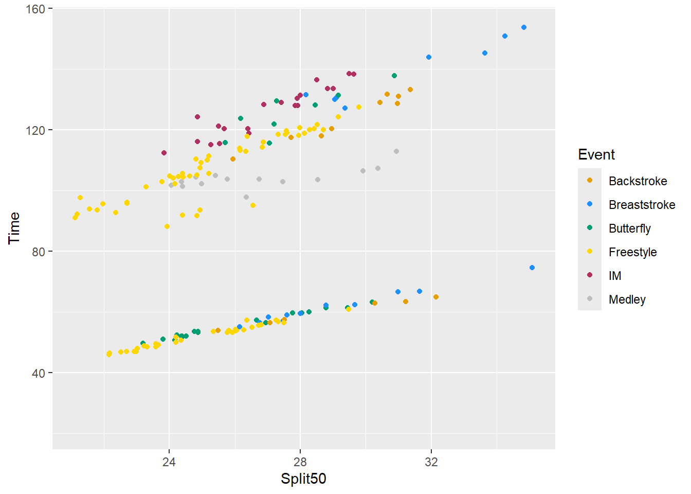
Something is wrong. Double check your data and labels.
mutate() to change the order of levels
SWIM %>%
filter(., Distance < 300) %>%
mutate(., Event = factor(Event,
levels = c("Freestyle", "Breaststroke",
"Butterfly", "Backstroke",
"IM", "Medley"
))
) %>%
ggplot(., aes(x = Split50, y = Time, color = Event)) +
geom_point() +
scale_color_manual(
values = c("#E69F00", "#1E90FF", "#009E73",
"#FFD700", "maroon", "gray")
)Warning: Removed 15 rows containing missing values or values outside the scale range
(`geom_point()`).OK, so we see that the color changes because the order of the levels changed. They are reordered in the plot legend.
mutate() to make it an ordered factor
The order of the labels does not make a factor ordered. We need to do something special to accomplish that, which we will do here. However, the example is arbitrary here as there is not order or ranking to how I arrange them.
SWIM %>%
filter(., Distance < 300) %>%
mutate(., Event = factor(Event,
levels = c("Freestyle", "Breaststroke",
"Butterfly", "Backstroke",
"IM", "Medley"
),
ordered = T)
) %>%
ggplot(., aes(x = Split50, y = Time, color = Event)) +
geom_point() +
scale_color_manual(
values = c("#E69F00", "#1E90FF", "#009E73",
"#FFD700", "maroon", "gray")
)Warning: Removed 15 rows containing missing values or values outside the scale range
(`geom_point()`).Change the labels for the levels
Pass a vector of equal length with label names.
SWIM %>%
filter(., Distance < 300) %>%
mutate(., Event = factor(Event,
levels = c("Freestyle", "Breaststroke",
"Butterfly", "Backstroke",
"IM", "Medley"
),
labels = c("Free", "Breast", "Fly",
"Back", "IM", "Medley"))
) %>%
ggplot(., aes(x = Split50, y = Time, color = Event)) +
geom_point() +
scale_color_manual(
values = c("#E69F00", "#1E90FF", "#009E73",
"#FFD700", "maroon", "gray")
)Warning: Removed 15 rows containing missing values or values outside the scale range
(`geom_point()`).
Colors didn’t change but labels did.
Pair a Color with a Level
I’m not going to get into why this approach is actually a vector but you can test it if you want.
is.vector(c(Freestyle = "#E69F00", Breaststroke = "#1E90FF",
Butterfly = "#009E73", Backstroke = "#FFD700",
IM = "maroon", Medley = "gray"))[1] TRUEPass a vector of names and color values.
SWIM %>%
filter(., Distance < 300) %>%
ggplot(., aes(x = Split50, y = Time, color = Event)) +
geom_point() +
scale_color_manual(
values = c(Freestyle = "#E69F00", Breaststroke = "#1E90FF",
Butterfly = "#009E73", Backstroke = "#FFD700",
IM = "maroon", Medley = "gray")
)Warning: Removed 15 rows containing missing values or values outside the scale range
(`geom_point()`).Pass a vector of colors
Changing the colors inside the function can be annoying so you might just create a vector object to pass to values.
color_vector <- c(Freestyle = "#E69F00", Breaststroke = "#1E90FF",
Butterfly = "#009E73", Backstroke = "#FFD700",
IM = "maroon", Medley = "gray")
SWIM %>%
filter(., Distance < 300) %>%
ggplot(., aes(x = Split50, y = Time, color = Event)) +
geom_point() +
scale_color_manual(values = color_vector)Warning: Removed 15 rows containing missing values or values outside the scale range
(`geom_point()`).
Vectors containing additional name elements
If that vector contains names that are not in the variable vector, then the function will not break. Rather, colors will show for level in the data only. We are going to save this plot object to use later.
color_vector <- c(Freestyle = "#E69F00", Breaststroke = "#1E90FF",
Butterfly = "#009E73", Backstroke = "#FFD700",
IM = "maroon", Medley = "gray",
SomethingNew = "blue"
)
(SWIM_plot <- SWIM %>%
filter(., Distance < 300) %>%
ggplot(., aes(x = Split50, y = Time, color = Event)) +
geom_point() +
scale_color_manual(values = color_vector)
)Warning: Removed 15 rows containing missing values or values outside the scale range
(`geom_point()`).
Vectors missing name elements
But when names in the data vector are not in the color vector, something interesting happens.
(color_vector <- color_vector[1:3]) Freestyle Breaststroke Butterfly
"#E69F00" "#1E90FF" "#009E73" SWIM %>%
filter(., Distance < 300) %>%
ggplot(., aes(x = Split50, y = Time, color = Event)) +
geom_point() +
scale_color_manual(values = color_vector)Warning: Removed 15 rows containing missing values or values outside the scale range
(`geom_point()`).
First, and most obviously, the missing pair is dropped from the legend. So the data points are stripped from the plot too, right? Look closer. No! They are in a there but plotting as "grey50". This happens because the default setting na.value = "grey50".
There is also no warning, so double check your plots!
More dramatically, show only the first color element.
SWIM %>%
filter(., Distance < 300) %>%
ggplot(., aes(x = Split50, y = Time, color = Event)) +
geom_point() +
scale_color_manual(values = color_vector[1])Warning: Removed 15 rows containing missing values or values outside the scale range
(`geom_point()`).color_vector Freestyle Breaststroke Butterfly
"#E69F00" "#1E90FF" "#009E73" which(names(color_vector) == "Freestyle")[1] 1This approach can be useful if you want to color only certain events by their name. The goal would be to determine which color corresponds to the Freestyle and plot only that. But remember, there are names in the vector and color values.
color_vector Freestyle Breaststroke Butterfly
"#E69F00" "#1E90FF" "#009E73" names(color_vector)[1] "Freestyle" "Breaststroke" "Butterfly" We need to find out the color position corresponding to the name position Using which() we can evaluate the names to determine which position is the Freestyle.
which(names(color_vector) == "Freestyle")[1] 1What we get returned is position 1. Of course, you knew that but something might change and if it moves position based on a reordering, then hard coding won’t work.
To obtain the color associated with element position 1, use [] notation after the vector.
color_vector[1] # hard coded solutionFreestyle
"#E69F00" color_vector[which(names(color_vector) == "Freestyle")] # flexible solutionFreestyle
"#E69F00" Putting it all together, pass that to values:
SWIM %>%
filter(., Distance < 300) %>%
ggplot(., aes(x = Split50, y = Time, color = Event)) +
geom_point() +
scale_color_manual(values = color_vector[which(
names(color_vector) == "Freestyle")]
)Warning: Removed 15 rows containing missing values or values outside the scale range
(`geom_point()`).And if you wanted more than one event, evaluate with %in% rather than ==. For example, names(color_vector) %in% c("Freestyle", "Butterfly").
SWIM %>%
filter(., Distance < 300) %>%
ggplot(., aes(x = Split50, y = Time, color = Event)) +
geom_point() +
scale_color_manual(values = color_vector[which(
names(color_vector) %in% c("Freestyle", "Butterfly"))]
)Warning: Removed 15 rows containing missing values or values outside the scale range
(`geom_point()`).